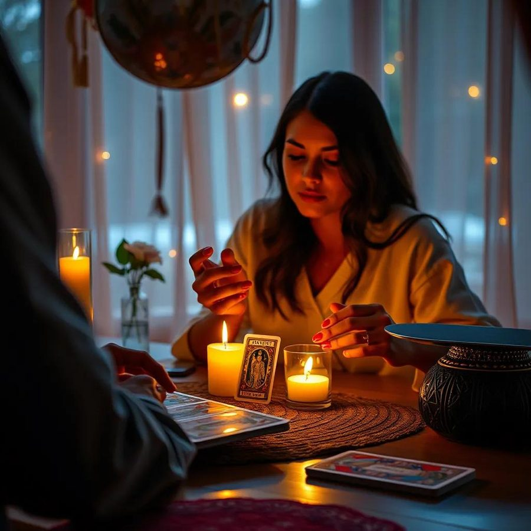
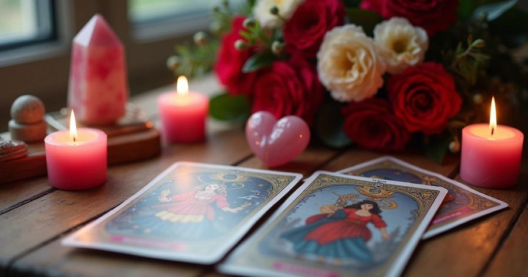

Amarres de amor
Para reconciliaciones, atracción y unión de pareja. El trabajo más solicitado, adaptado a cada historia.
Consultar este trabajo →Consulta privada y confidencial
Trabajos de amarre, prosperidad y protección hechos con años de tradición. Te acompaño desde donde estés — sin importar el país.
Quién te acompaña
Inicié este camino desde joven, formándome en la práctica espiritual de manera cercana y constante a lo largo de los años. Hoy acompaño a cada persona con la misma dedicación con la que empecé, entendiendo primero tu situación real antes de proponer cualquier trabajo.
Cada consulta es privada y confidencial, sin importar en qué país te encuentres.
Conóceme por WhatsAppLo que trabajo contigo

Para reconciliaciones, atracción y unión de pareja. El trabajo más solicitado, adaptado a cada historia.
Consultar este trabajo →Para abrir camino en el trabajo, negocios y finanzas estancadas.
Consultar →
Para cortar envidias, malas energías y protegerte a ti y tu hogar.
Consultar →Voces de quienes ya caminaron esto
“Después de meses sin hablarnos, volvimos a encontrarnos. Hoy estamos juntos otra vez.”
— Cliente verificado
“Sentí un alivio real después de la limpia. Las cosas empezaron a fluir en mi negocio.”
— Cliente verificado
“La atención fue cercana y respetuosa en todo momento, aunque escribí desde otro país.”
— Cliente verificado
Da el primer paso
Escríbeme directo por WhatsApp y te acompaño desde el primer mensaje. Toda consulta es privada y confidencial, sin importar en qué país estés.
Escribir por WhatsApp